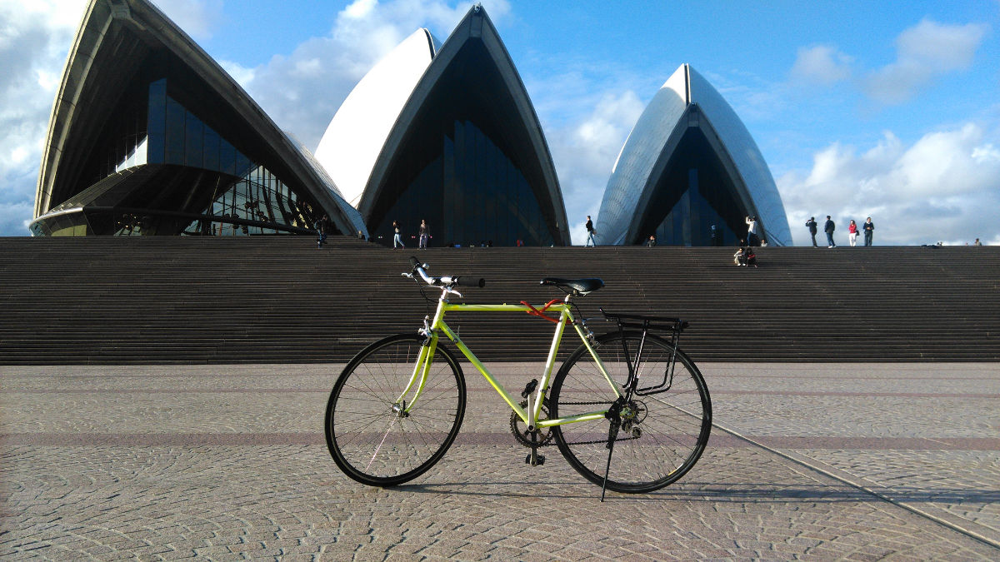

Passion now, study later (part II)
This is an update to Passion now study later post that I published 2 months ago.
UPDATE:
Coding
After two months of extensive web developing, I was able to launch my http://dearandrewkim.com website on my birthday! I built my website using Middleman, a ruby based static site generator.
I realised that I really enjoy front end web development. I think instead of "coding" back end, I'll shift my focus to "front end developement". Whilst I was redeveloping my website, I learnt how to use Bootstrap Framework, HAML, YAML, Markdown, Ruby on Rails syntax, jQuery and implement other javascript frameworks.
Now I'm going to try to learn more front end development tools such as Bower, Yeoman, Grunt and CSS preprocessors.
Acting
Two months ago,I signed up to a 10 week Meisner Technique acting course. All I can say is that I did not enjoy these classes. My aim as I highlighted in my first post was to have fun, increase self confidence and develop my communication skills. These acting classes were aimed towards people who were serious about becoming actors (which I was not). I went to only four of them and stopped attending. I did not want to waste any more of my precious time after work to pursue something that I did not enjoy doing.
Instead, I signed up to a 8 week Improv Class course. I attended my first class last week and I absolutely loved it. This was what I was looking for - putting yourself out there in a supportive and fun environment. I am really looking forward to my improv class tomorrow.
Cycling
I bought a bike and it's honestly been the best investment I've made in a while. I commute to work with a bicycle and it has been so beneficial in many ways
- I save money on transport
- I get exercise in the morning
- I am more awake at work
- I am able to get from point A to point B. I don't need to think about public transport and trackwork, and I don't have a car.
- It has been making me happier
Straight away I got so addicted to cycling so last month, I took a week off work and cycled from Canberra to Sydney. It was very enjoyable and meditative. At times it was difficult especially when climbing never-ending hills, but overall, it was quite doable - especially for a person who have never cycle-toured before. I will be posting about this journey very soon.